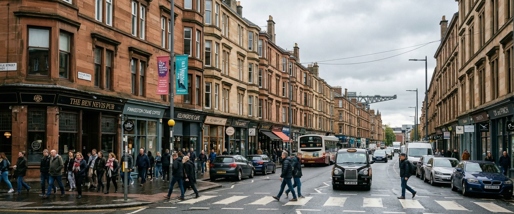
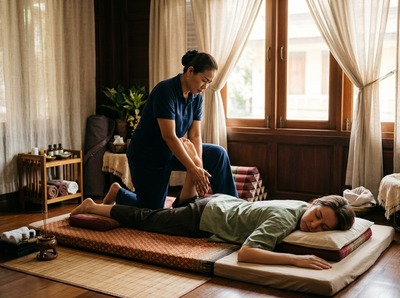

Finnieston sits on the north bank of the River Clyde, nestled between Glasgow's West End and the city centre.

Thai massage in Finnieston is something residents here have good reason to seek out regularly. The area has transformed from its industrial past into one of Glasgow's most vibrant neighbourhoods, drawing young professionals, creatives, and hospitality workers who fill its celebrated restaurants, bars, and music venues. The OVO Hydro, the SEC Centre, and a thriving independent food and drink scene give Finnieston a distinct energy.
It's a neighbourhood that lives at full pace, and the people here tend to feel it.
Serendipity Massage Therapy & Wellness is based on Hope Street in Glasgow City Centre. It's an easy journey from Finnieston — by bus or on foot. For residents and workers in the area, that matters.
After a long shift in one of the neighbourhood's restaurants, a late event at the OVO Hydro, or a full week at a desk nearby, a therapeutic massage session is rarely more than 20 minutes away.

Finnieston attracts people who carry physical and mental load in different ways. Hospitality workers put in long hours on their feet. Creative workers carry postural tension from sustained screen time. Active residents training at local gyms build up muscle fatigue that doesn't resolve on its own.
Serendipity's team is trained to work with all of these patterns. You can book your session online in a few minutes and get something in the diary before the week catches up with you.
Serendipity offers a full range of therapeutic and relaxation treatments at their Hope Street studio. Whether you need deep muscle work or something more restorative, the team will match the right treatment to what you need.
The most direct route from Finnieston to Serendipity on Hope Street is by bus. The 38 and 38A services run along Argyle Street into Glasgow City Centre. From there, it's a short walk to Central Chambers on Hope Street. Journey time is typically under 15 minutes.
If you prefer the train, Exhibition Centre station is within easy walking distance of Finnieston. Trains connect directly to Glasgow Central, and Hope Street is a short walk uphill from there.
If you'd rather walk the whole way, the route along Argyle Street takes around 25 to 30 minutes. It's flat and easy.
Serendipity is at Floor 1, Suite 50, Central Chambers, 93 Hope Street, G2 6LD. The building is well served by public transport and easy to reach from most parts of Finnieston.
Serendipity is a professional team practice — not a sole trader, not a chain. Every therapist is trained to a consistent standard. The techniques were developed by head therapist Jariya Malone, drawing from the traditional Thai massage tradition to build an approach that delivers precise, repeatable results.
That means you get the same quality of care on your first visit as on your twentieth.
Clients come to Serendipity for many reasons. Relief from chronic neck and shoulder tension. Recovery after physical training. Better sleep. Genuine time to decompress.
Serendipity treats these as real health needs — not luxuries. You can book an appointment online or call 0141 673 6630 to speak with the team directly.
Finnieston's shift from heavy industry to one of Glasgow's most sought-after areas is remarkable. In 2016, The Times ranked it first in its list of the 20 Hippest Places to Live in Britain.
The Finnieston Crane stands on the Clyde riverfront as a lasting reminder of that industrial past. It was once used to load steam locomotives onto ships bound for destinations around the world. Today it's a recognised symbol of Glasgow's engineering history. You can read more about it on the Finnieston Crane Wikipedia page.
Serendipity is based at Central Chambers, 93 Hope Street, in Glasgow City Centre. From Finnieston, that's around 15 minutes by bus on the 38 or 38A, or a 25 to 30 minute flat walk along Argyle Street. It's also easily reachable by train via Exhibition Centre station into Glasgow Central.
The 38 and 38A bus services run from Finnieston along Argyle Street into Glasgow City Centre and are the most convenient option. Alternatively, Exhibition Centre station is within walking distance of Finnieston and trains connect directly to Glasgow Central, from where Hope Street is a short uphill walk. Both routes are straightforward and well-served throughout the day.
Same-day availability is possible depending on the schedule, but booking in advance is always recommended to secure your preferred time. You can check availability and book a session online at any time, or call the team on 0141 673 6630 to find out what's available.
Traditional Thai massage is an excellent option for anyone who spends long hours standing or moving. It uses acupressure and assisted stretching to release tension across the whole body, including the lower back, hips, and legs. A Thai oil massage or sports massage can also help with muscle fatigue and recovery, and the team can advise on the best fit for your needs when you book.
Serendipity offers appointments across the week, including evenings, making it convenient for Finnieston residents who work irregular hours or prefer to book outside of the nine-to-five. Contact the studio on 0141 673 6630 or visit the website to check current availability and opening times.